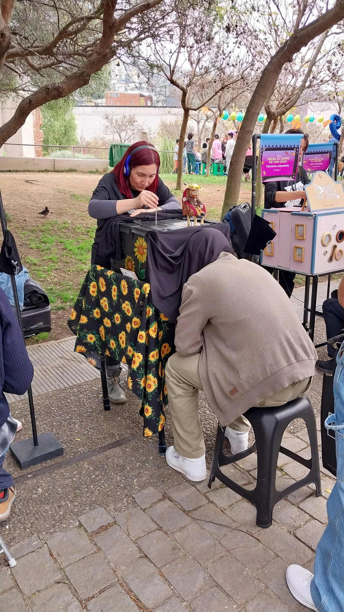
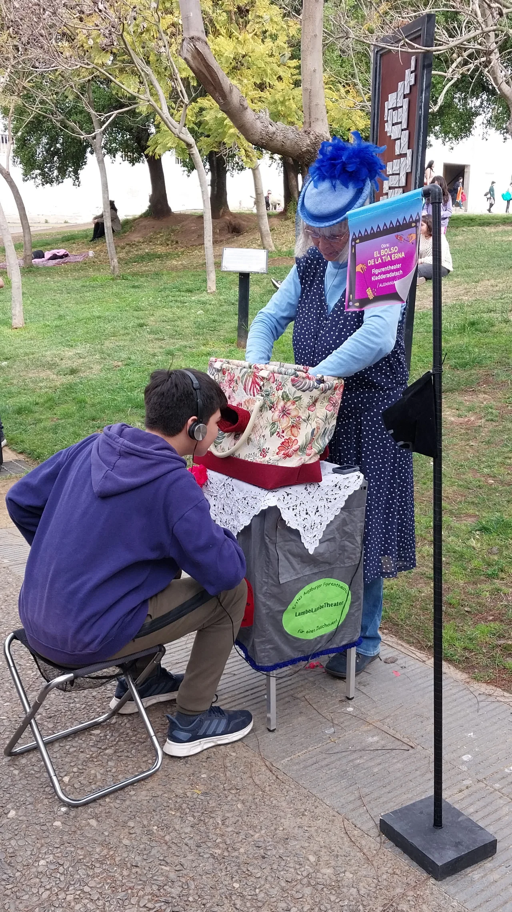

En una plaza de Valparaíso o de Salvador de Bahía, un titiritero coloca una caja de madera sobre un trípode de fotógrafo y le entrega unos audífonos a un único transeúnte que apoya su ojo en una mirilla oscura. Una indagación sobre el teatro lambe-lambe, la escala íntima y la poética del secreto en América Latina.
Gaston Bachelard escribió en La poética del espacio que la miniatura no es una simple reducción cuantitativa del mundo, sino una de las puertas de entrada más vertiginosas hacia la inmensidad interior de la conciencia humana. Quien contempla un objeto diminuto —una caracola menuda, una nuez abierta que alberga una ciudad de juguete o el ojo de una cerradura iluminada— no empequeñece su pensamiento: al contrario, la mirada se concentra, el ruido exterior se apaga de golpe y la imaginación se expande hacia dimensiones insospechadas. En las plazas públicas de Valparaíso, de Salvador de Bahía o de Belo Horizonte florece desde hace cuatro décadas una forma escénica que llevó esa intuición filosófica a sus últimas consecuencias: el teatro lambe-lambe.

El nombre mismo encierra un homenaje entrañable a la historia de la imagen popular. Los lambe-lambe eran aquellos fotógrafos ambulantes de plaza de principios del siglo veinte que montaban una gran cámara de fuelle sobre un trípode de madera y se cubrían la cabeza con un paño negro para enfocar al cliente sobre una placa de vidrio emulsionada al colodión húmedo, lamiendo la esquina del papel con la punta de la lengua para verificar qué lado tenía la capa fotosensible. En 1989, en Bahía, dos titiriteras brasileñas llamadas Denise dos Santos e Ismael Simões tomaron una de aquellas viejas cajas de fotógrafo, pero en lugar de colocar un lente de vidrio instalaron un escenario en miniatura de marionetas para presentar una obra de tres minutos titulada La danza del parto, destinada a un único espectador a la vez.
La arquitectura del dispositivo lambe-lambe es un prodigio de austeridad espacial y dramaturgia de bolsillo. El artefacto consta de una caja cúbica de madera o cartón prensado montada sobre un trípode plegable a la altura del pecho. En la cara frontal se abre una pequeña mirilla circular u ovalada provista de una lente de aumento y una cortina de terciopelo oscuro que sella la entrada de luz exterior; en el costado opuesto, oculta a la vista del público por otra tela negra, se encuentran las mangas por donde el titiritero introduce sus manos para manipular los muñecos, encender los diminutos focos de linterna y accionar las escenografías deslizantes.
El espectador que se sienta en el banquito de madera colocado frente a la caja se coloca unos audífonos conectados a un reproductor portátil para aislarse del bullicio de la plaza y apoya la frente contra el ocular de goma. En ese preciso instante se produce un milagro de concentración perceptiva: el murmullo de los automóviles, los gritos de los vendedores ambulantes y el viento de la bahía desaparecen como por encanto; ante sus ojos se ilumina una cámara mágica de treinta centímetros de profundidad donde un marinero de trapo navega en un barquito de papel sobre un mar de plástico azul, o donde una anciana cose una carta a la luz de una vela microscópica.
La obra dura lo que dura una canción: dos, tres, cuatro minutos a lo sumo. Pero en esa brevedad temporal la experiencia estética adquiere una intensidad afectiva que las salas monumentales de quinientas butacas jamás logran alcanzar. En el teatro convencional, el espectador comparte la sala con una masa de desconocidos, pendiente del código social del aplauso, de la tos del vecino de fila o del brillo indiscreto de un teléfono móvil; en el lambe-lambe, la función es un secreto inviolable entre dos seres humanos que no se ven las caras: el titiritero que mueve los hilos invisibles en la oscuridad y el ojo solitario que se asoma a la mirilla.

Resulta profundamente revolucionaria la lección política que este teatro en miniatura arroja contra las lógicas del espectáculo contemporáneo. Toda la industria del entretenimiento global nos bombardea a diario con megaproducciones de pantallas IMAX gigantescas, efectos digitales hiperbólicos y presupuestos millonarios que tratan al ciudadano como a un consumidor pasivo e indefenso ante el bombardeo sensorial. El lambe-lambe responde con una cajita de madera terciada, dos pedazos de alambre, una bombilla de linterna de diez pesos y una marioneta de plastilina modelada a mano, demostrando que la emoción poética no necesita de la grandilocuencia del capital para conmover el corazón humano.
En las escaleras y miradores de los cerros de Valparaíso, cuando el viento del Pacífico azota los cables de la luz y el mar se viste de plata bajo el sol poniente, las hileras de cajas de lambe-lambe montadas en la vereda forman un festival ambulante de secretos compartidos. Quien sale de la mirilla parpadea con asombro, deslumbrado por la luz cruda de la tarde, sonriendo con esa timidez conmovida del que ha sido testigo de un milagro privado que las palabras ordinarias no alcanzan a describir.
Allí, en esa cola de vecinos y estudiantes que esperan pacientemente su turno para apoyar el ojo en la madera, se rescata la esencia misma del convivio humano: el derecho inalienable a la lentitud, al secreto y a la maravilla de descubrir que el universo entero cabe holgadamente en el hueco oscuro de una caja de zapatos.
Fuentes.
- Bachelard, Gaston (1957). La poética del espacio: La miniatura y el nido. Fondo de Cultura Económica.
- Vidal, Denise y Simmen, Ismael (2010). Teatro Lambe-Lambe: Origens, técnica e dramaturgia no Brasil. Editora da UFBA.
- Dubatti, Jorge (2007). Filosofía del teatro: El convivio y la expectación teatral. Atuel.
Investigación sobre teatro de animación en miniatura y dramaturgia del espacio íntimo.
Fuentes consultadas el 19.11.2026. Análisis e interpretación: RUMMOR. Edición privada para revisión.